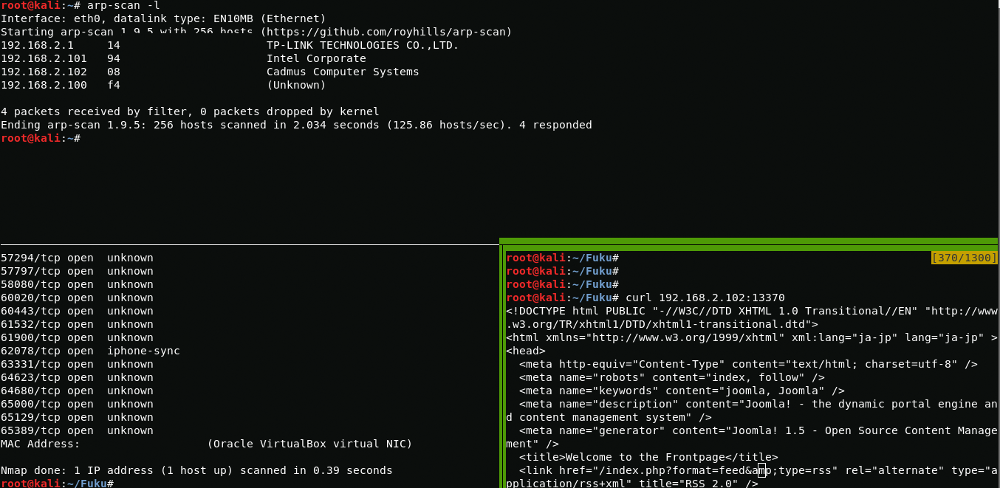

Scanning and Enum3ration
First thing I do is find the ip address and port scan, after that I find the active Apache server on port 13370
{kind=link}
arp-scan -l
nmap 192.168.2.102
After going to a webpage, I see a web site running on joomla.
{kind=link}
Getting shell
In source code of page you can find the version of joomla
{kind=link}
Yeah, this version of joomla has many vulnerabilities, but in this case I need an exploit for changing the administrator password (Joomla! 1.5.x - 'Token' Remote Admin Change Password).
{kind=link}
searchsploit joomla 1.5
After changing the administrator password, I successfully login into the site control panel.

After loading php reverse shell i get www-data

Privil3ge escalation
In running processes you can see running Chkrootkit 0.49
{kind=link}
ps -aux
{kind=link}
After analyzing the vulnerability on exploitdb, I realized that I needed to create a file in the / tmp directory that should change the administrator password
{kind=link}
Now connect via ssh and get root.
{kind=link}